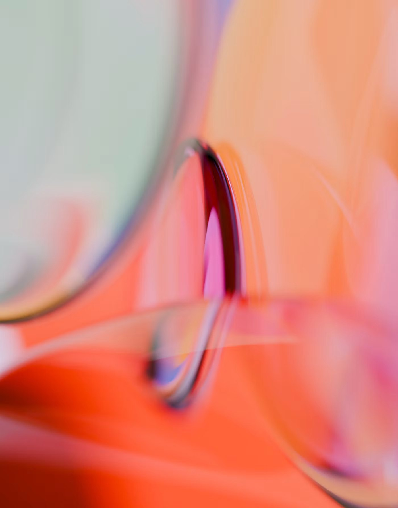

Hi, I’m Sarah

Intro
I’m a London based Product Designer who cares about creating thoughtful digital experiences that lie at the intersection of beauty, functionality and context. I have seven years of experience using research, concepting, experience design and visual design to create digital products.
I love design, and I love building just as much. These days I use Claude Code to bring my designs to life, turning ideas into real, working products I can test, refine and share. This site is one of them.
Approach
My approach is grounded in clarity, collaboration and strong systems. I lead with an approachable, steady style built on trust and open communication, and I focus on creating environments where teams can do their best work. I pair big-picture thinking with hands-on understanding, helping ideas move from strategy to execution with purpose. I see brand as a unifying force that connects teams, decisions and experiences, creating greater impact when it is embedded across the business.